First register the ASP.NET support using the following command.
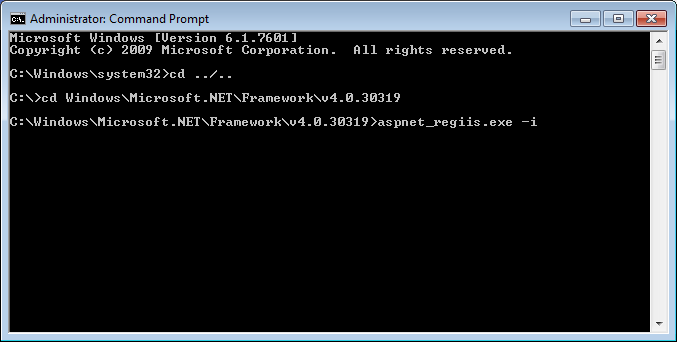Execute the Internet Information Services Manager and open the Server Certificates section.
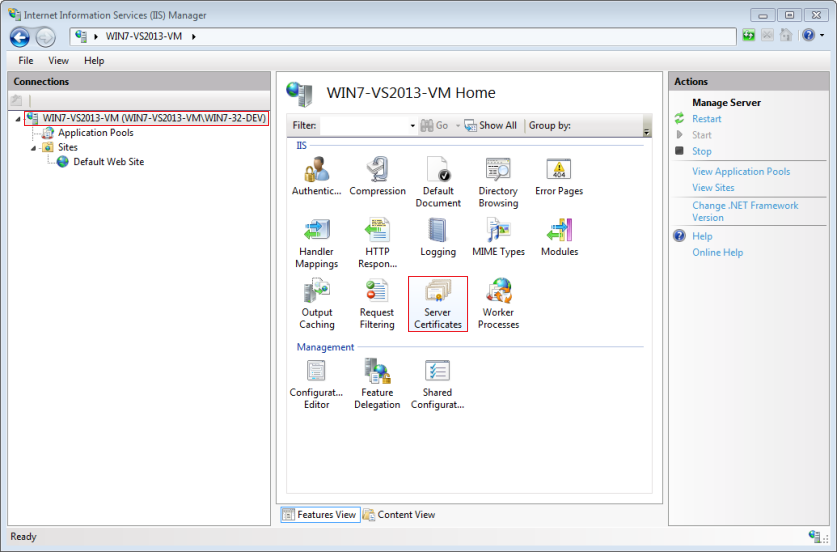Create a new Self-Signed Certificate.
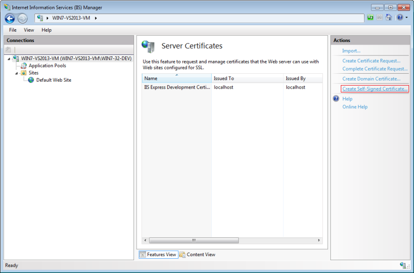Here an example.
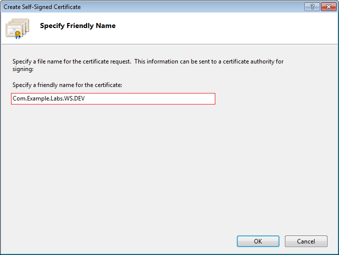The certificate is now created.
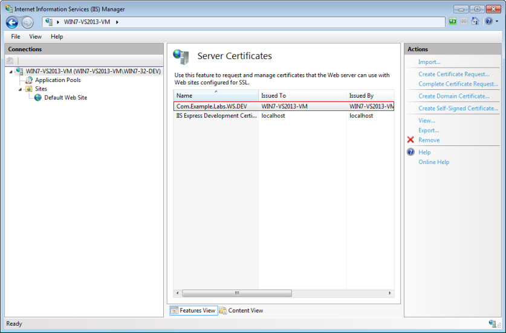Add a new Web Site.
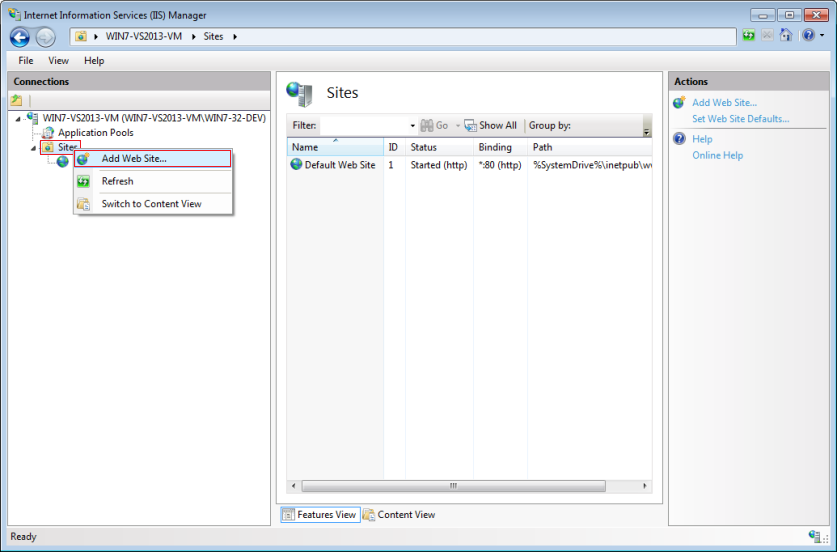Fill all the red fields and do not forget to link the certificate.
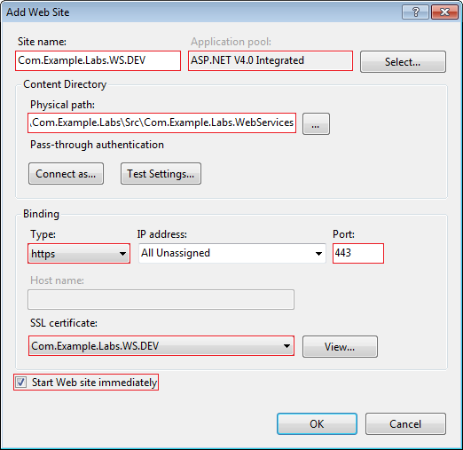Open the SSL Settings section.
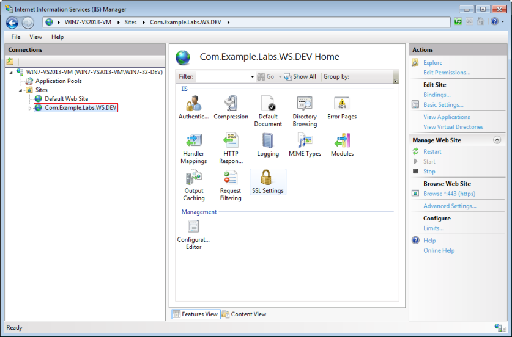Check the Require SSL option and Apply the change.
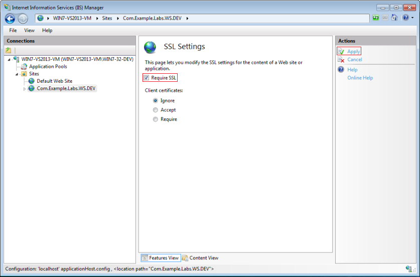Restart the IIS service to apply all the modifications.
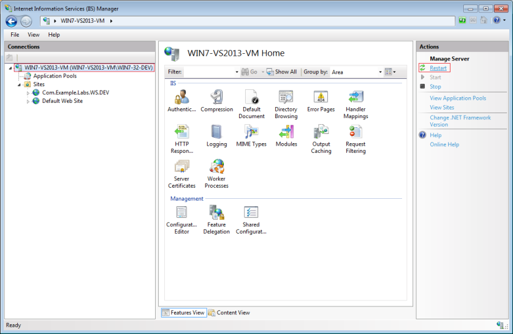Finally enter one of the WCF url in the browser (the solution must be compiled). You shoud obtain a certificate error.
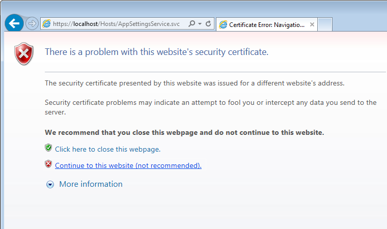Accept the certificate to continue. You should obtain the following page.
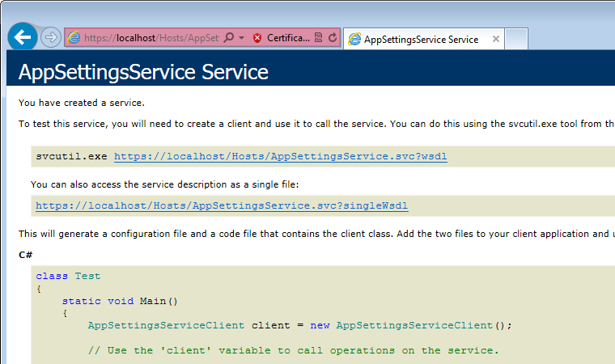To bypass the following exception at runtime the database must be secure with a login.
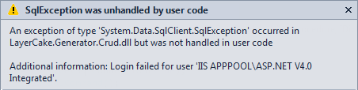If it is not the case create a new login to the server.
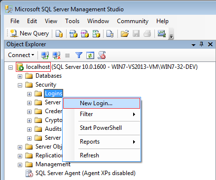Example.
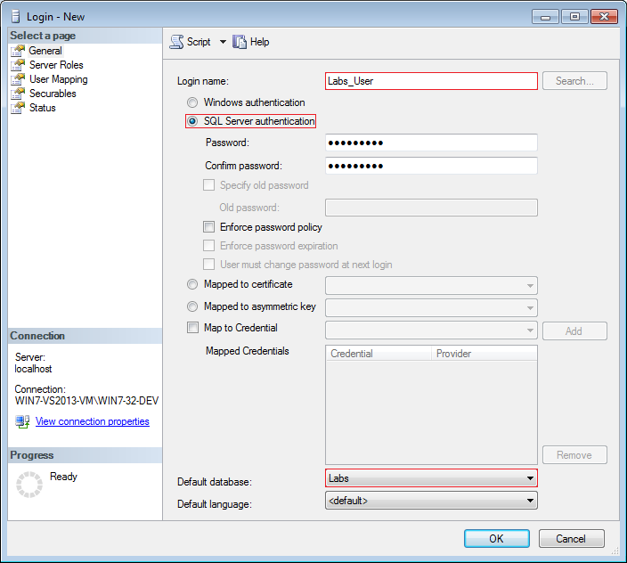Add a new login to the database.
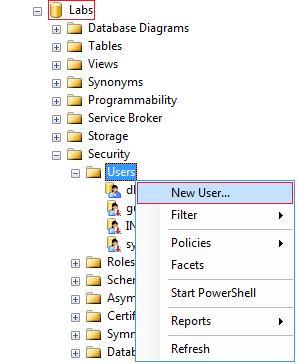Example.
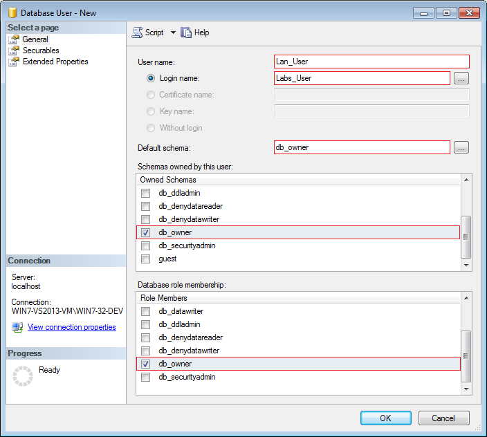Result.
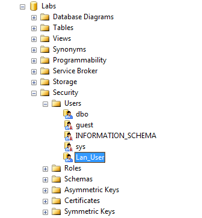Edit the Web.config file and update the connection string with the authentication information.
<connectionStrings> <add name="Default" connectionString="Data Source=localhost;Initial Catalog=Labs;User Id=Labs_User;Password=Labs_Pass;" /> </connectionStrings>
Edit the LayerCake Generator configuration file and set the Config.WebServices.WithWcfSecurity key to true.
# -- WCF Services -------------------------------------------------------------------
# [Can be modified]
# -----------------------------------------------------------------------------------
# If Config.WebServices.WithWcfSecurity == false -> RootUrl.Standard is used
# If Config.WebServices.WithWcfSecurity == true -> RootUrl.Secure is used
"Config.WebServices.WithWcfSecurity" : "true"
"Config.WebServices.StandardRootUrl" : "http://localhost:64666" # IIS Express
"Config.WebServices.SecureRootUrl" : "https://localhost" # IIS + SSL
Execute LayerCake Generator process in order to update the code (the 'With SQL Procedure Integration' option can be uncheck).
Recompile the whole solution and restart IIS.
namespace Com.Example.Labs.WebServices
{
...
public class CustomUserValidator : UserNamePasswordValidator
{
public bool IsValidated(string identifier, string password)
{
...
// Custom code here...
// ----------------------
isValidated = this.GetUserWithRoles(identifier, password) != null;
// ----------------------
...
}
...
}
}
Edit the App.config file.
1. Comment the <security mode="None" /> node
2. Uncomment the <security mode="TransportWithMessageCredential"> one
<?xml version="1.0"?> <configuration> ... <system.serviceModel> ... <bindings> <wsHttpBinding> <binding closeTimeout="00:02:00" openTimeout="00:02:00" sendTimeout="00:02:00" maxBufferPoolSize="2147483647" maxReceivedMessageSize="2147483647"> <readerQuotas maxArrayLength="2147483647" maxNameTableCharCount="2147483647" maxStringContentLength="2147483647" maxDepth="2147483647" maxBytesPerRead="2147483647" /> <!--<security mode="None" />--> <security mode="TransportWithMessageCredential"> <transport clientCredentialType="None" proxyCredentialType="None" realm="" /> <message clientCredentialType="UserName" negotiateServiceCredential="true" algorithmSuite="Default" establishSecurityContext="true" /> </security> </binding> </wsHttpBinding> </bindings> ... </system.serviceModel> </configuration>
3. Do not forget to update the <endpoint> nodes in order to use https addresses.
Use the following code to validate the self-signed certificate (call it once at client application initialization).
ServicePointManager.ServerCertificateValidationCallback += new RemoteCertificateValidationCallback( ServerCertificateValidationHelper.ValidateRemoteCertificateCallback);
Use the following code to register the client credentials (call it once when the user has submitted login/password).
ServiceProxy.SetClientCredentials("username", "password"); // from the User table...
Now the client is ready to consume WCF services over SSL.